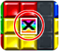

12 |
Oggetto |
 |
Durante la partita vengono visualizzati dei blocchi (illustrati a destra) quando l'impostazione oggetto è su ON in "Sfida VS", "Nintendo Wi-Fi Connection" e altre modalità "Multigiocatore". Elimina la riga contenente il blocco per ottenere l'oggetto.
Premi
Esistono 10 tipi di oggetti.
Per gli oggetti con il segno
Puoi cambiare gli oggetti visualizzati per ogni regola del gioco selezionando "Oggetto" nel menu "Opzioni" del gioco. Quando giochi in modalità "Nintendo Wi-Fi Connection" puoi selezionare
ON (con oggetti)/OFF (no oggetti) come condizione per la ricerca di avversari. |
||||||||||||||||||||||||||||||||||||||||||||||||||||||||||||||||||||||||||||||||||||||||||||||||||||||||


 |
 |
 |